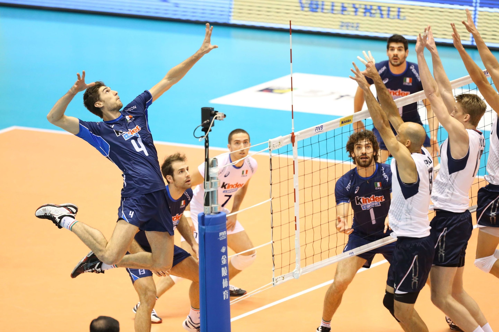

Крупнейшие соревнования по волейболу
- Олимпийские игры– самые престижные соревнования по волейболу.
- Чемпионат мира- соревнования сильнейших национальных волейбольных сборных, которые проводятся один раз в четыре года. Являются вторыми по престижности соревнованиями по волейболу, после Олимпийских игр.
- Кубок мира- международный турнир по волейболу среди мужских и женских сборных. Проводится за год до Олимпийских игр, а его призёры получают гарантированные места на Олимпийских играх.
- Всемирный Кубок чемпионов. Всемирный кубок чемпионов проходит в год, предшествующий году проведения чемпионата мира.
- Мировая лига (FIVB World League) - самый престижный коммерческий турнир мужских национальных волейбольных сборных.
- Гран-при по волейбол- крупнейший коммерческий турнир для женских национальных волейбольных сборных.
- Чемпионат Европы- соревнования сильнейших национальных волейбольных мужских и женских сборных стран-членов Европейской конфедерации волейбола. Проводится один раз в два года.
- Евролига- ежегодное соревнование волейбольных сборных, проводимое под эгидой Европейской конфедерации волейбола.

Назад